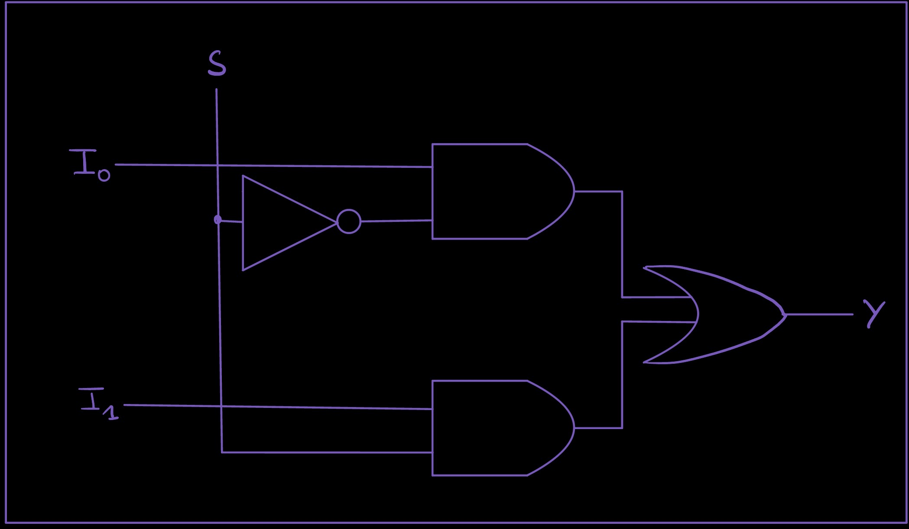

Module 1.2: The Multiplexer (MUX)
Block 1 — Combinational Logic
Estimated time: 45–60 minutes
Prerequisites: Module 1.1 — Logic Gates
What you'll learn
By the end of this module you'll be able to:
- Explain what a multiplexer does and why it's useful
- Read and write a 2-to-1 MUX in TL-Verilog using the ternary operator
- Scale a 2-to-1 MUX to a 4-to-1 MUX using chained conditions
- Use a MUX to select between signals in a circuit
- Solve a MUX-based design challenge
The idea: a programmable switch
You now know how logic gates work. Gates are fixed — an AND gate always ANDs, an OR gate always ORs. But what if you want a circuit that can choose what it does based on a control signal?
That's a multiplexer, or MUX.
A MUX is a circuit that selects one of several input signals and forwards it to the output. The selection is controlled by one or more select lines.
Think of it like a railway switch. Multiple tracks come in, but only one is routed forward — and the switch lever (the select signal) decides which one.
MUXes are everywhere in digital design. Every time a processor chooses between two values, every time a circuit picks a path — there's almost certainly a MUX doing the work.
The 2-to-1 MUX
The simplest MUX: two inputs, one select line, one output.
| SEL | Output |
|---|---|
| 0 | A |
| 1 | B |
When SEL is 0, the output is whatever A is. When SEL is 1, the output is whatever B is.
Circuit symbol:

In TL-Verilog:
This uses the ternary operator — the same ?: you might know from C or Python. Read it as: "if SEL is true, output B, otherwise output A."
One line. That's a complete 2-to-1 MUX.
Why ternary?
TL-Verilog (and Verilog) uses ?: for MUX-like selection because it maps directly to hardware. The synthesizer sees condition ? x : y and produces exactly a MUX circuit. It's not just shorthand — it's the idiomatic way to describe selection in hardware.
See it running in Makerchip
Click below to open the 2-to-1 MUX in Makerchip. The inputs A, B, and SEL automatically cycle through combinations so you can watch the output switch between them in the waveform.
Open 2-to-1 MUX in Makerchip ↗
How to read the waveform
Watch the $out signal. It should match $a whenever $sel is 0, and match $b whenever $sel is 1.
| Cycle | $sel | $a | $b | $out |
|---|---|---|---|---|
| 1 | 0 | 0 | 1 | 0 |
| 2 | 0 | 1 | 0 | 1 |
| 3 | 1 | 0 | 1 | 1 |
| 4 | 1 | 1 | 0 | 0 |
In cycles 1 and 2, SEL is 0 so the output follows A. In cycles 3 and 4, SEL is 1 so the output follows B. The select line is the lever; A and B are the tracks.
Scaling up: the 4-to-1 MUX
What if you have four inputs and want to select between them? You need two select lines — because two bits give you four combinations (00, 01, 10, 11).
Selection table:
| SEL[1:0] | Output |
|---|---|
| 00 | A |
| 01 | B |
| 10 | C |
| 11 | D |
In TL-Verilog, you chain conditions using ==:
Read it top to bottom: check each value of SEL in order, and output the matching signal. The last line is the default — if none of the conditions above matched, output A.
MUX trees
You can keep extending this pattern for as many inputs as you need. An 8-to-1 MUX checks 8 conditions with a 3-bit select. The structure stays the same — one condition per input, a default at the bottom.
Exercise: Build a 4-to-1 MUX with logic output
The task: Build a 4-to-1 MUX where each input is a logic expression:
- When
$sel == 2'b00, output$x AND $y - When
$sel == 2'b01, output$x OR $y - When
$sel == 2'b10, outputNOT $x - When
$sel == 2'b11, output$x XOR $y
Open starter code in Makerchip ↗
The starter code has $out = 1'b0 as a placeholder. Replace it with the correct MUX logic.
Hint
Break it into two steps. First compute all four expressions as intermediate signals:
```tlv
$and = $x && $y;
$or = $x || $y;
$not = !$x;
$xor = $x ^ $y;
```
Then chain them into a 4-to-1 MUX using `==` conditions.
Solution
````tlv $and = $x && $y; $or = $x || $y; $not = !$x; $xor = $x ^ $y;
$out = $sel == 2'b11 ? $xor :
$sel == 2'b10 ? $not :
$sel == 2'b01 ? $or :
$and;
```
Compute your signals first, then select between them. This separation keeps the gate logic and the selection logic clean and easy to read.
Challenge: 2-bit function selector
Build a circuit that applies a different operation depending on a 2-bit opcode.
You have two 1-bit inputs $a and $b, and a 2-bit opcode $op[1:0]. Based on the opcode, the output should be:
| $op | Output |
|---|---|
| 00 | $a AND $b |
| 01 | $a OR $b |
| 10 | $a XOR $b |
| 11 | NOT $a |
This is a simplified ALU — a circuit that selects between operations based on a control code. You'll build a full one in Module 1.5.
Open challenge starter code in Makerchip ↗
Hint
Same pattern as the exercise — compute all four results first as intermediate signals, then use $op as your select to choose between them.
Solution
$and = $a && $b;
$or = $a || $b;
$xor = $a ^ $b;
$not = !$a;
$out = $op == 2'b11 ? $not :
$op == 2'b10 ? $xor :
$op == 2'b01 ? $or :
$and;
```
Notice that `NOT` only uses `$a` — `$b` is ignored when `$op == 2'b11`. That's fine; in a real ALU some operations don't use all inputs.
## Where this fits next
You now have two of the most important combinational building blocks: **gates** and **MUXes**. These two alone can express any combinational logic function.
In **Module 1.5**, you'll combine them into an **ALU** — an Arithmetic Logic Unit — the circuit at the heart of every processor. It's a MUX that selects between several operations based on an opcode. You already built a mini version of it in the challenge above.
## Quick reference
| Circuit | TL-Verilog | What it does |
| ---------- | --------------------------------- | ----------------------------------------- |
| 2-to-1 MUX | `$out = $sel ? $b : $a` | Select A or B based on SEL |
| 4-to-1 MUX | `$out = $sel == 2'b11 ? $d : ...` | Select between inputs using == conditions |
```